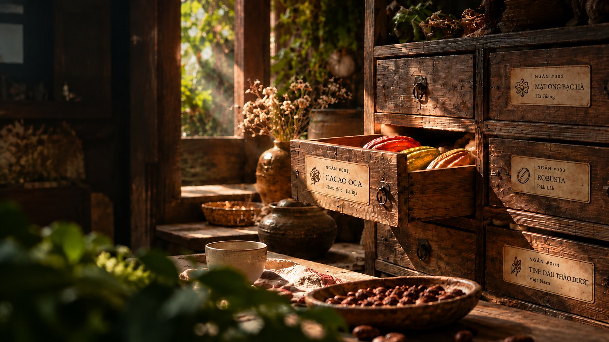
Mở một ngăn của Việt Nam
Gạc Măng Rê cất vị quê nhà
Mở một ngăn. Gặp một sản vật. Biết một người. Chạm một miền đất.
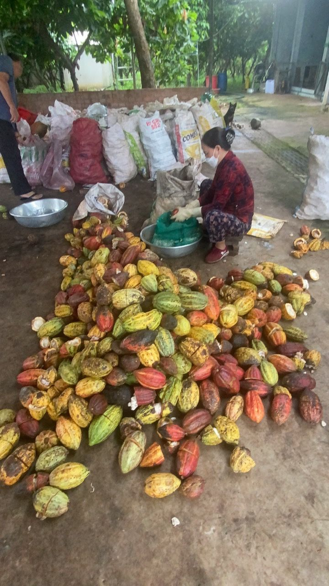
Một chiếc chạn trong căn bếp Việt.
Nơi cất những thứ đáng được giữ lại.
Gạc-măng-rê, hay gạc-măng-giê, là cách Việt hóa của garde-manger: chiếc tủ cất thức ăn, gia vị, bát đĩa. Trong đó có hũ mắm, túi gạo, hũ tương nhà làm, và cả một kho ký ức của gia đình.
Ngày nay sản vật ở rất xa chỉ cần vài cú chạm. Khó hơn là biết nó đến từ đâu, ai làm ra, và làm bằng cách nào. Gạc Măng Rê đi tìm những người vẫn làm, nhìn cách họ trồng, hái, lên men, phơi, rang, rồi kể lại bằng những gì chúng tôi thực sự thấy.
[Điền đoạn riêng của bạn: 3–4 câu về bạn, vì sao bắt đầu đi tìm những người làm này.]
— [Tên bạn], người sáng lập
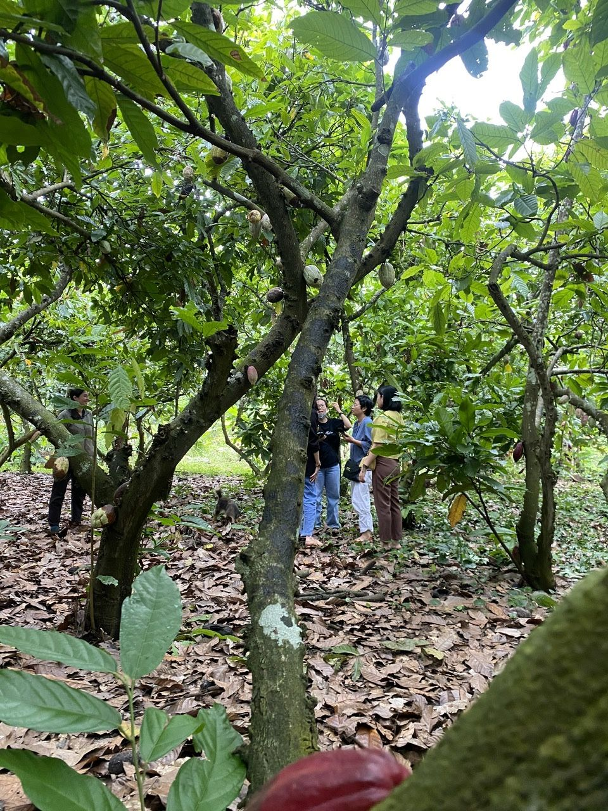
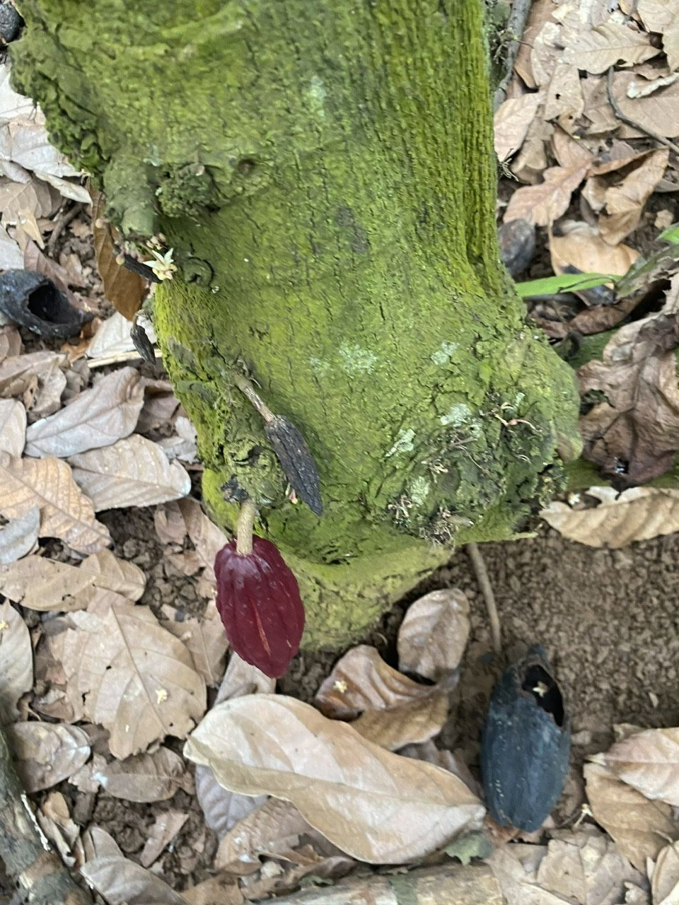
Từ quả đến thanh,
không đi tắt.
Hai người giữ vườn, một xưởng làm từ đầu đến cuối, và một quy trình Tree-to-Bar. Không kiềm hóa. Không phụ gia. Đọc xong, bạn sẽ hiểu vì sao một thanh cacao có thể ngon đến thế.
Mỗi bước đều có người đứng sau.
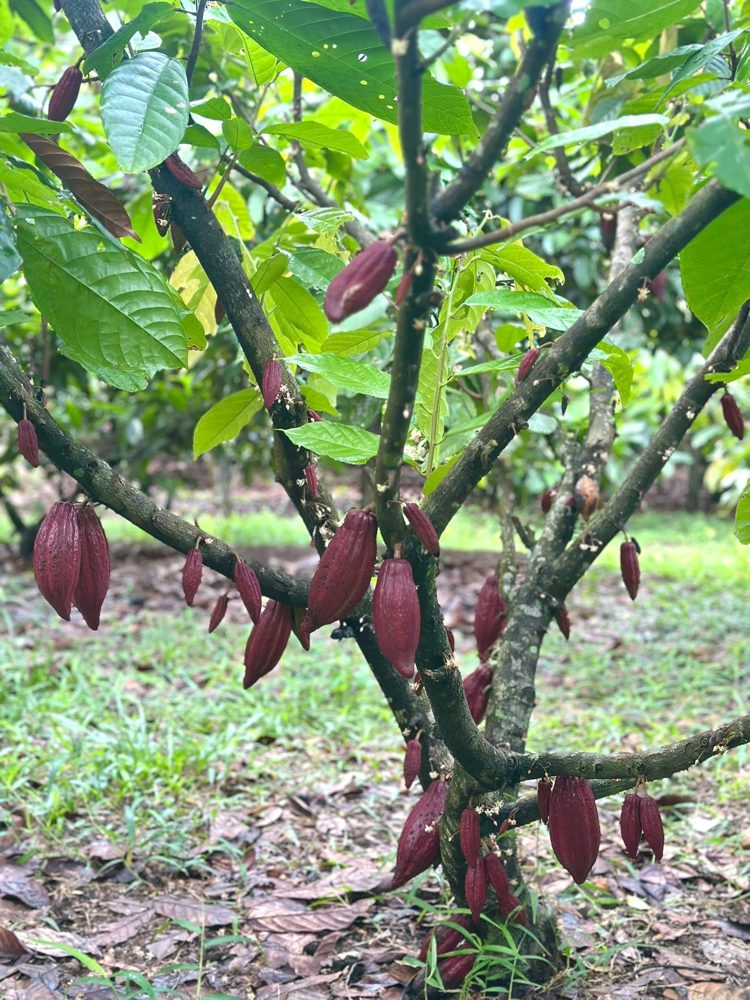
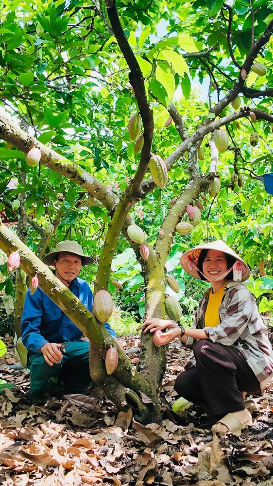
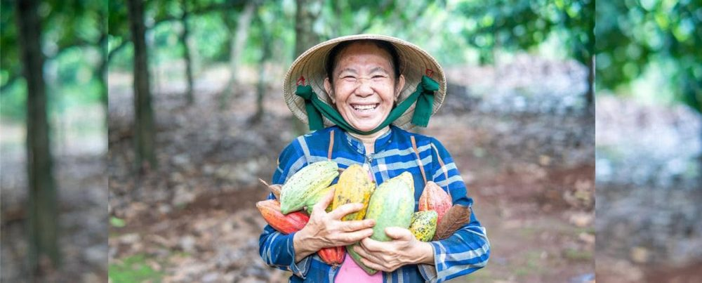
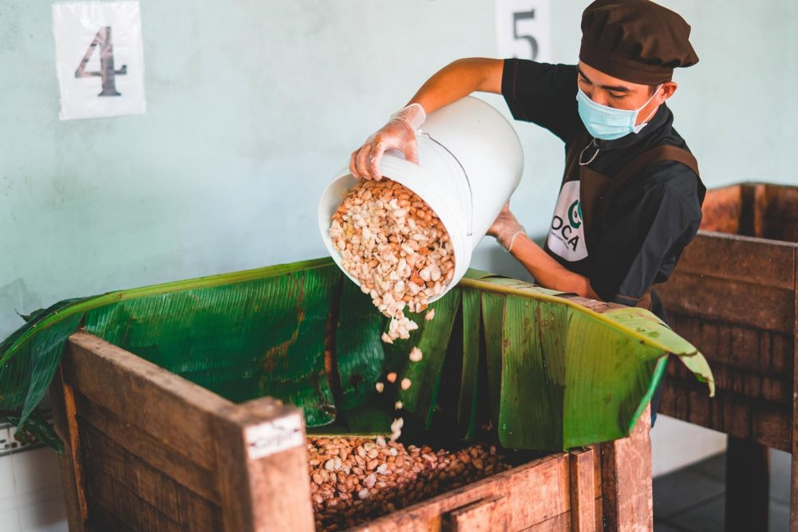
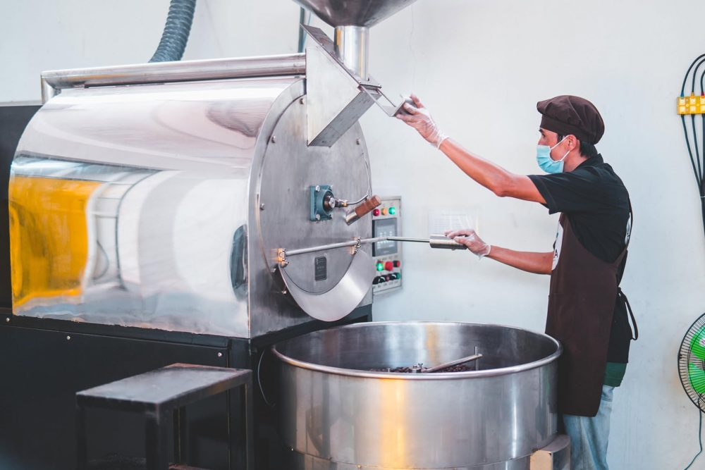
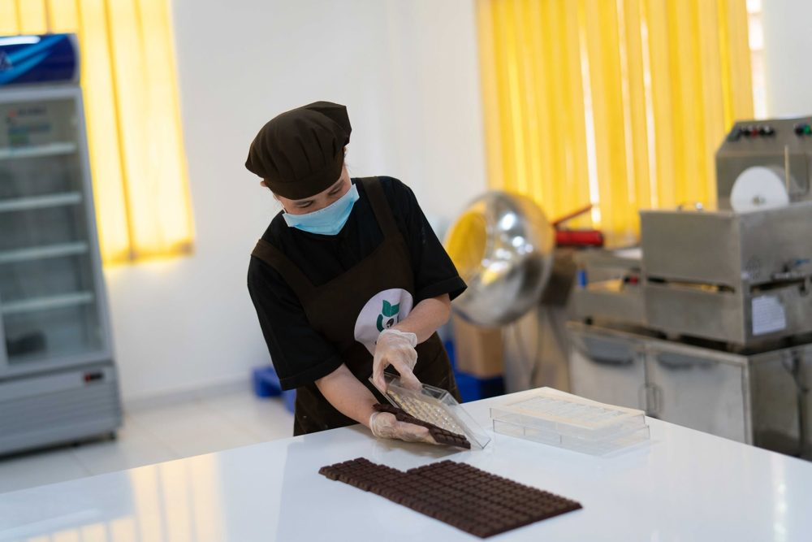
Muốn vào tủ, sản vật phải trả lời được bốn câu hỏi.
Nó đến từ đâu?
Ai làm ra nó?
Điều gì làm nó đáng ăn, đáng dùng?
Vì sao câu chuyện này đáng được kể?
Mỗi ngăn là một vùng đất, một người làm, một câu chuyện.
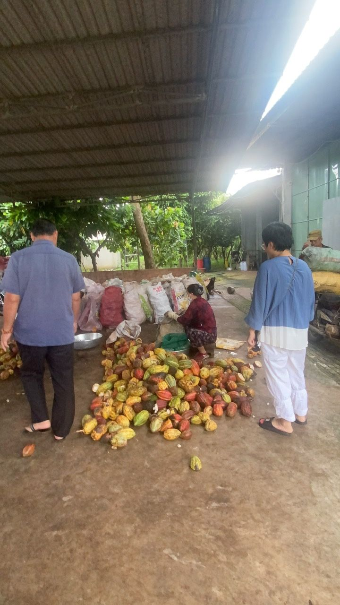
Cacao mộc, từ vườn đến thanh socola
Bột cacao không kiềm hóa và nibs, từ một vườn có tên, có người giữ.
Đọc câu chuyện →Mật ong bạc hà
Đang viết cùng người làm. Sẽ mở khi có đủ ảnh thực địa.
Cà phê Robusta
Đang chuẩn bị cùng người làm.
Trà
Đang chuẩn bị cùng người làm.
Việt Tú
Đang chuẩn bị cùng người làm.
Hiểu trước. Yêu sau.
Rồi mới mở ngăn.
Hiểu
Đọc về vùng đất, người làm và từng bước đưa sản vật đến tay bạn.
Yêu
Thấy đôi tay, quả, hạt và xưởng đúng như chúng đang là, không tô vẽ.
Mở ngăn
Nhắn Zalo hoặc Messenger để đặt phần. Chúng tôi xác nhận số lượng và lịch giao.
Cùng nhau cất lại
những điều đáng được giữ.
Nhắn để đặt phần. Người phụ trách sẽ trả lời trong giờ làm việc, xác nhận số lượng và báo lịch mẻ.